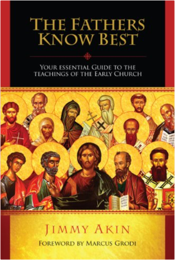 The Fathers Know Best: Your Essential Guide to the Teachings of the Early Church is a unique resource. It introduces you to the teachings of the first Christians in a way no other work can. It is specially designed to make it easy for you to find the information you want and need. Amazing features in this fact-packed book include: - More than 900 quotations from the writings of the early Church Fathers, as well as from rare and important documents dating back to the dawn of Christian history. - Mini-biographies of nearly 100 Fathers, as well as descriptions of dozens of key early councils and writings. - A concise history of the dramatic spread of Christianity after Jesus told his disciples to evangelize all nations. - Special maps showing you where the Fathers lived, including many little-known and long-vanished locations. - A guide to nearly 30 ancient heresies, many of which have returned to haunt the modern world. - The Fathers' teaching on nearly 50 topics, including modern hot-button issues like abortion, homosexuality, and divorce. This groundbreaking work presents the teachings of the early Christians in a way unlike any other book. It flings open the doors of the crucial but little-known age covering the birth of Christianity and the triumphant march of the gospel throughout the ancient world. 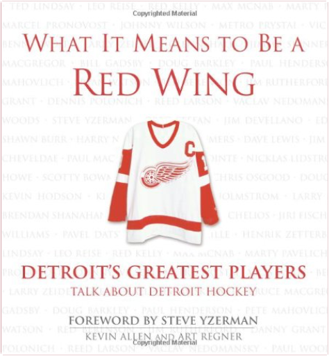 Taking a decade-by-decade approach to the Detroit Red Wings hockey tradition, this collection brings together over 40 stories from the most outstanding voices of the team. The spirit of the Red Wings is not captured by just one phrase, one season, or one particular game; instead, the players and managers who made the magic happen over the decades blend their experiences to capture the true essence of their beloved team. Wings fans will relish the intimate stories told by the figures they have come to cherish. 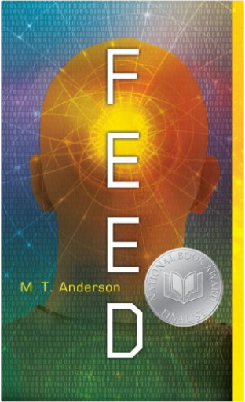 Identity crises, consumerism, and star-crossed teenage love in a futuristic society where people connect to the Internet via feeds implanted in their brains. O: A Presidential NovelAnonymous The truth only fiction can tell. The Magic Lantern: The Revolution of '89 Witnessed in Warsaw, Budapest, Berlin, and PragueTimothy Garton Ash The Magic Lantern is one of those rare books that define a historic moment, written by a brilliant witness who was also a participant in epochal events. Whether covering Poland’s first free parliamentary elections—in which Solidarity found itself in the position of trying to limit the scope of its victory—or sitting in at the meetings of an unlikely coalition of bohemian intellectuals and Catholic clerics orchestrating the liberation of Czechoslovakia, Garton Ash writes with enormous sympathy and power. 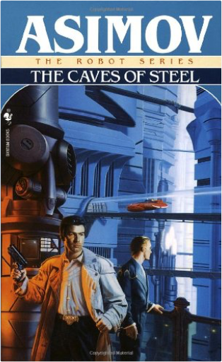 A millennium into the future two advancements have altered the course of human history: the colonization of the galaxy and the creation of the positronic brain. Isaac Asimov's Robot novels chronicle the unlikely partnership between a New York City detective and a humanoid robot who must learn to work together. Like most people left behind on an over-populated Earth, New York City police detective Elijah Baley had little love for either the arrogant Spacers or their robotic companions. But when a prominent Spacer is murdered under mysterious circumstances, Baley is ordered to the Outer Worlds to help track down the killer. The relationship between Life and his Spacer superiors, who distrusted all Earthmen, was strained from the start. Then he learned that they had assigned him a partner: R. Daneel Olivaw. Worst of all was that the "R" stood for robot—and his positronic partner was made in the image and likeness of the murder victim! 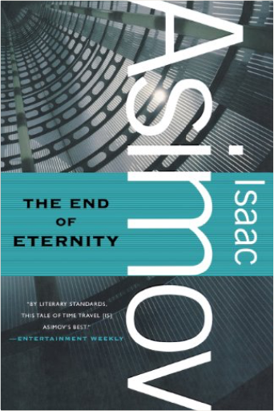 One of Isaac Asimov's SF masterpieces, this stand-alone novel is a monument of the flowering of SF in the 20th century. It is widely regarded as Asimov's single best SF novel and one every SF fan should read. | 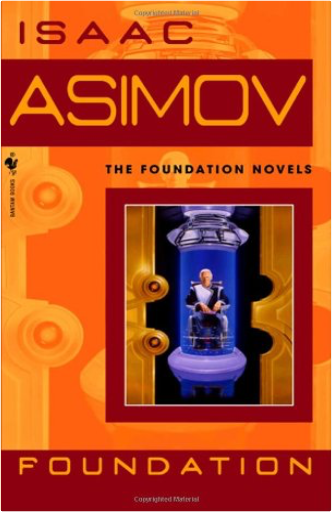 For twelve thousand years the Galactic Empire has ruled supreme. Now it is dying. But only Hari Sheldon, creator of the revolutionary science of psychohistory, can see into the future—to a dark age of ignorance, barbarism, and warfare that will last thirty thousand years. To preserve knowledge and save mankind, Seldon gathers the best minds in the Empire—both scientists and scholars—and brings them to a bleak planet at the edge of the Galaxy to serve as a beacon of hope for a fututre generations. He calls his sanctuary the Foundation. 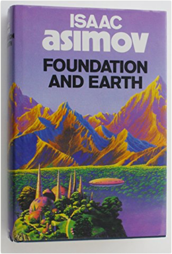 The epic story of the Foundation is one of the great classics of science fiction by the Grand Master of the genre. Isaac Asimov's legendary saga, winner of the Hugo Award for Best All-Time Novel Series, has enthralled generations of readers - and continues to amaze. All records of Earth have been removed systematically from the libraries of Foundation worlds. Now Councilman Golan Trevize and Professor Janov Pelorat traverse the galaxy in search of humanity's ancestral planet. On worlds beyond the Foundation's influence, superstition and taboo shroud the subject of their quest. To name Earth is to utter an obscenity. Fortunately, the space travellers find allies - and Pelorat finds a lover named Bliss - among the telepaths of the planet Gaia. As they near their destination, Bliss picks up thought waves of intelligent beings. What she cannot tell is whether or not those beings are human. 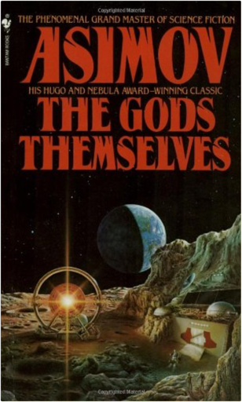 Only a few know the terrifying truth—an outcast Earth scientist, a rebellious alien inhabitant of a dying planet, a lunar-born human intuitionist who senses the imminent annihilation of the Sun. They know the truth—but who will listen? They have foreseen the cost of abundant energy—but who will believe? These few beings, human and alien, hold the key to the Earth's survival. 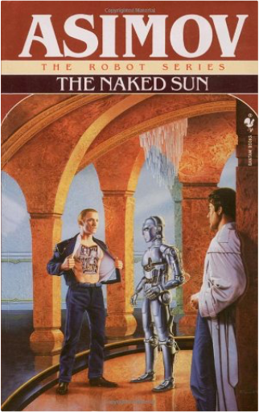 A millennium into the future, two advancements have altered the course of human history: the colonization of the Galaxy and the creation of the positronic brain. On the beautiful Outer World planet of Solaria, a handful of human colonists lead a hermit-like existence, their every need attended to by their faithful robot servants. To this strange and provocative planet comes Detective Elijah Baley, sent from the streets of New York with his positronic partner, the robot R. Daneel Olivaw, to solve an incredible murder that has rocked Solaria to its foundations. The victim had been so reclusive that he appeared to his associates only through holographic projection. Yet someone had gotten close enough to bludgeon him to death while robots looked on. Now Baley and Olivaw are faced with two clear impossibilities: Either the Solarian was killed by one of his robots—unthinkable under the laws of Robotics—or he was killed by the woman who loved him so much that she never came into his presence! 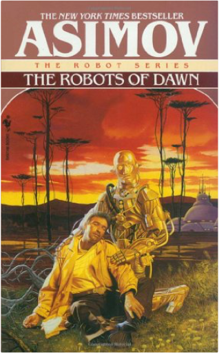 A millennium into the future two advances have altered the course of human history: the colonization of the Galaxy and the creation of the positronic brain. Isaac Asimov's Robot novels chronicle the unlikely partnership between a New York City detective and a humanoid robot who must learn to work together. 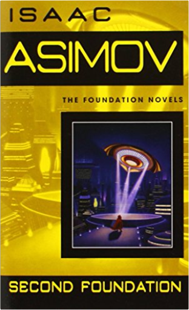 Isaac Asimov's Foundation novels are one of the great masterworks of science fiction. As unsurpassed blend of nonstop action, daring ideas, and extensive world-building, they chronicle the struggle of a courageous group of men and women dedicated to preserving humanity's light in a galaxy plunged into a nightmare of ignorance and violence thirty thousand years long. 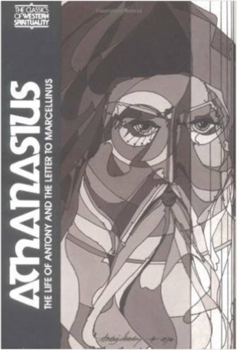 Athanasius: The Life of Antony and The Letter to Marcellinus Translation and introduction by Robert c. Gregg Preface by William A. Clebsch |